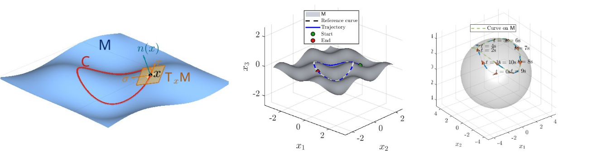
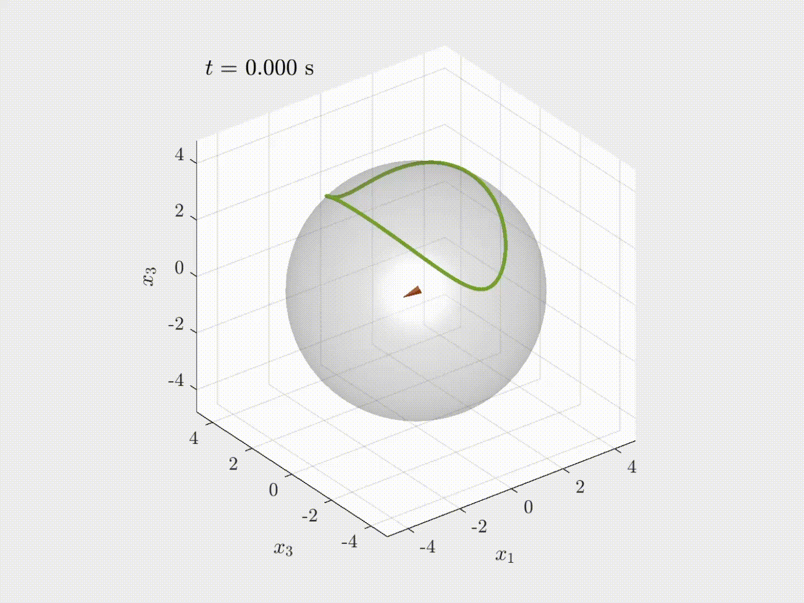
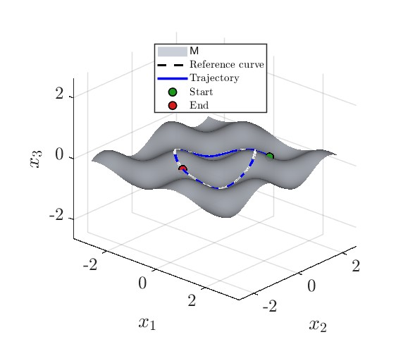
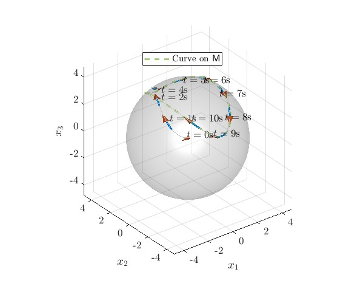

Dynamic Controller
The dynamic controller drives the unicycle toward a geometric curve on the manifold while stabilizing the associated path-following manifold. The animation illustrates the resulting closed-loop behavior over time.
Set stabilizing for a kinematic unicycle evolving on a manifold embedded embedded in \( \mathbb{R}^3 \).

This paper presents a set stabilizing nonlinear control laws for a kinematic unicycle evolving on a manifold \( M \) embedded in \( \mathbb{R}^3 \). Two controllers are presented: a static controller and a dynamic controller. For both control designs, the unicycle is driven to a geometric curve on \(\mathsf{M} \). We characterize and stabilize the corresponding zero-dynamics set, also known as the path-following manifold. This set represents all possible motions on the curve. Stabilizing the zero-dynamics manifold implies path-invariance, which in simple words means that when the unicycle is on the curve, it never leaves the curve for all future time. This is in contrast to the traditional trajectory tracking objective. Moreover, the proposed controller also guarantees local exponential convergence to the zero-dynamics manifold under certain conditions. The results found in this paper are validated through numerical simulations. Code and animations are available in this repository and on this project page.The GitHub repository is available at gradslab/UnicycleOnManifolds.
This repository contains MATLAB code, visualizations, and animations for modeling and control of a unicycle robot evolving on manifolds. The implementation includes both static and dynamic path-following controllers, together with scripts for simulation, animation, and vector-graphics export.
Dynamic Controller
The dynamic controller drives the unicycle toward a geometric curve on the manifold while stabilizing the associated path-following manifold. The animation illustrates the resulting closed-loop behavior over time.

Static Controller
The static controller achieves path-invariant motion on the manifold by stabilizing the corresponding zero-dynamics set. The animation shows representative motion under this formulation.

Dynamic Formulation Snapshots
Representative trajectory snapshots for the dynamic controller on a manifold-based curve.

Static Formulation Snapshots
Representative trajectory snapshots for the static controller with fixed forward velocity.
The full source code is available in the GitHub repository: gradslab/UnicycleOnManifolds.
After cloning the repository, open MATLAB in the repository root and run the desired experiment script. The repository contains both dynamic and fixed-velocity examples, together with plotting, animation, and export utilities.
.
├── FaceImage/
├── dynamic/
│ ├── manifold_sphere_curve_1/
│ ├── manifold_sphere_curve_2/
│ └── manifold_sphere_curve_3/
├── fixed_v/
│ ├── manifold_sphere_curve_1/
│ ├── manifold_sphere_curve_2/
│ └── manifold_sphere_curve_3/
├── docs/
│ ├── index.html
│ ├── _config.yml
│ ├── static/
│ │ └── image/
│ └── _layouts/
└── README.md
git clone git@github.com:gradslab/UnicycleOnManifolds.git
cd UnicycleOnManifolds
# Open MATLAB and run one of the example scripts
run('dynamic/manifold_sphere_curve_2/main.m')
run('fixed_v/manifold_sphere_curve_1/main.m')
@inproceedings{akhtar_allawati_unicycle_manifolds,
title = {Modeling and Control of a Unicycle Robot on Manifolds},
author = {Adeel Akhtar and Mohamed Al Lawati},
booktitle = {This work is under review},
year = {2026}
}